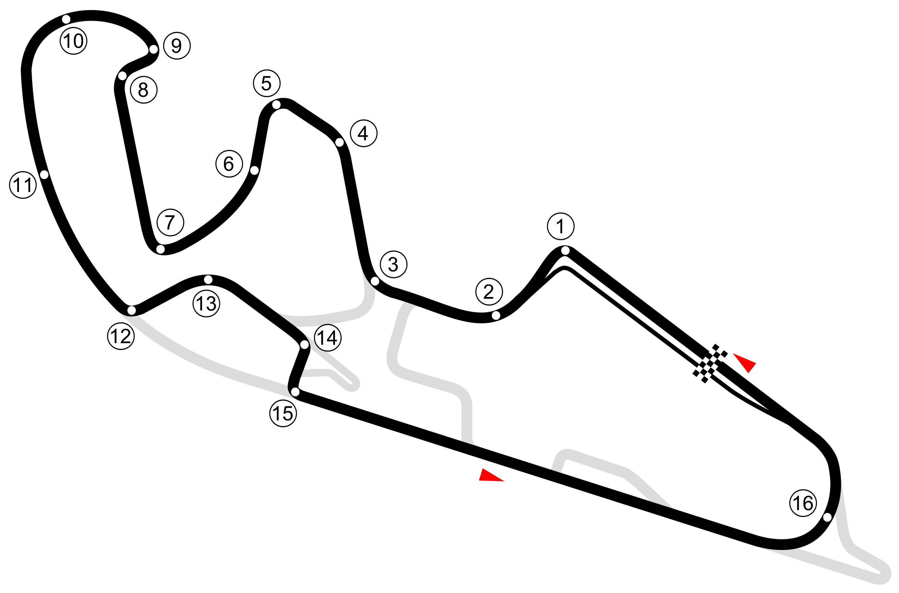

Home
Schedules
Result & Standings
Teams & Drivers
About
Contact us
Store
Hot Topics
Testing
28
NOV
VALENCIA
Valencia MotoGP™ Official Test
Circuit Ricardo Tormo
Testing
01-03
FEB
MALASIA
Sepang Shakedown MotoGP™ Official Test
Petronas Sepang International Circuit
Testing
06-08
FEB
MALASIYA
Sepang MotoGP™ Official Test
Petronas Sepang International Circuit
Testing
19-20
FEB
QATAR
Qatar MotoGP™ Official Test
Lusail International Circuit
GP1
08-10
MAR
QATAR
Qatar Airways Grand Prix of Qatar
Lusail International Circuit
GP2
22-24
MAR
PORTUGAL
Grande Prémio de Portugal
Autódromo Internacional do Algarve
GP3
12-14
APR
UNITED STATES
Red Bull Grand Prix of The Americas
Circuit Of The Americas
GP4
26-28
APR
SPAIN
Gran Premio de España
Circuito de Jerez - Ángel Nieto
Testing
29
MAY
SPAIN
Jerez MotoGP™ Official Test
Circuito de Jerez - Ángel Nieto
GP5
10-12
JUN
FRANCE
Grand Prix de France
Le Mans
GP6
24-26
MAY
SPAIN
Gran Premi Monster Energy de Catalunya
Circuit de Barcelona-Catalunya
GP7
31-02
JUN
ITALY
Gran Premio d'Italia
Autodromo Internazionale del Mugello
Testing
03
JUN
ITALY
Mugello MotoGP™ Official Test
Autodromo Internazionale del Mugello
GP8
14-16
JUN
KAZAKHSTAN
Grand Prix of Kazakhstan
Sokol International Racetrack
GP9
28-30
JUN
NETHERLANDS
Motul TT Assen
TT Circuit Assen
GP10
05-08
JUL
GERMANY
Liqui Moly Motorrad Grand Prix Deutschland
Sachsenring
GP11
02-04
AUG
UNITED KINGDOM
Monster Energy British Grand Prix
Silverstone Circuit
GP12
16-18
AUG
AUSTRIA
Motorrad Grand Prix von Österreich
Red Bull Ring - Spielberg
GP13
30-01
AUG-SEP
SPAIN
Gran Premio de Aragón
MotorLand Aragón

GP14
06-08
SEP
ITALY
Gran Premio Red Bull di San Marino e della Riviera di
Misano World Circuit Marco Simoncelli
Testing
09
SEP
ITALY
Misano MotoGP™ Official Test
Misano World Circuit Marco Simoncelli
GP15
22-24
SEP
INDIA
Grand Prix of India
Buddh International Circuit
GP16
27-29
SEP
INDONASIA
Pertamina Grand Prix of Indonesia
Pertamina Mandalika Circuit
GP17
04-06
OCT
JAPAN
Motul Grand Prix of Japan
Mobility Resort Motegi
GP18
18-20
OCT
AUSTRALIA
Australian Motorcycle Grand Prix
Phillip Island
GP19
25-27
OCT
THAILAND
OR Thailand Grand Prix
Chang International Circuit
GP20
01-03
NOV
MALASIYA
PETRONAS Grand Prix of Malaysia
Petronas Sepang International Circuit
GP21
15-17
NOV
SPAIN
Gran Premio Motul de la Comunitat Valenciana
Circuit Ricardo Tormo